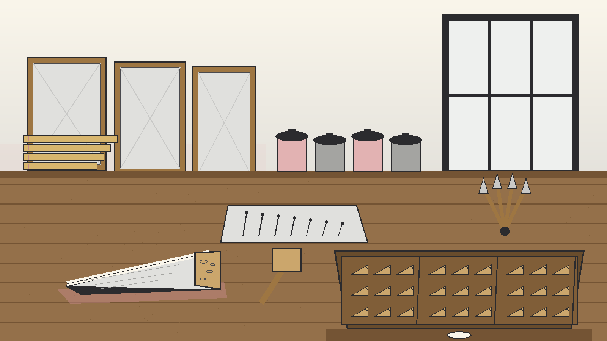
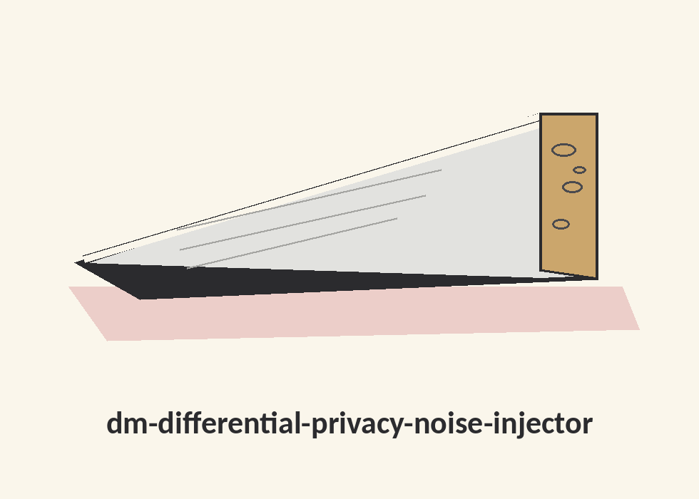
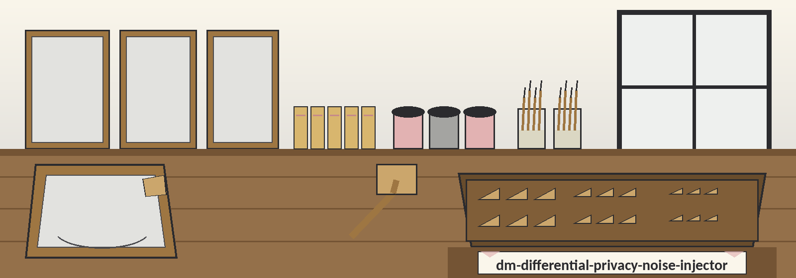
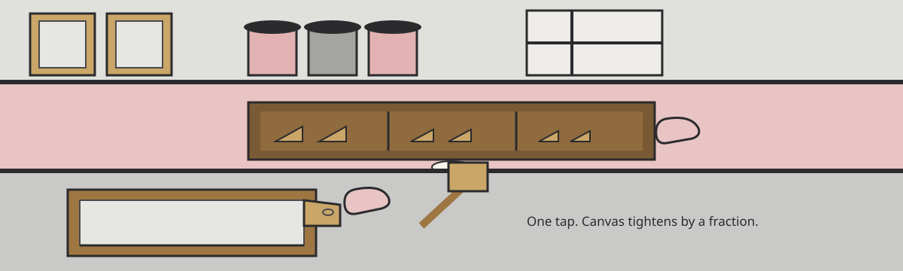

dm-differential-privacy-noise-injector: The Canvas Stretcher's Key Drawer
Inventory entry, medium noted first: a framer's workbench in a painting studio, the drawer of stretcher keys pulled open in the foreground, and one small wooden wedge doing the measuring for a tool that adds Laplacian noise to numbers. Open one compartment, shut it, open the next.



Compartment one: the job itself
Numbers get Laplacian noise added. The mechanism operates value by value: a Laplace draw per value, driven by whoever runs the bench supplying both sensitivity and epsilon. Sensitivity counts as asserted by that operator, unchecked against actual figures. Nobody tallies an epsilon budget across successive jobs, so reworking identical material repeatedly accumulates exposure in a fashion this bench neither logs nor caps.
Kinship, in the housed wording's own terms: this tool sits among tools designed to generate or mask sensitive data with realistic-looking but meaningless values.
No column value from anyone's data, no invented epsilon figure, and no sample result appears anywhere on this site.
Compartment two: Choosing parameters
Epsilon, Single Run
Epsilon means the privacy dial for one isolated job: twisting it smaller pours in extra noise, hardening privacy for that job; twisting it larger pours in less noise, softening privacy, leaving results nearer original figures.
Sensitivity, Default 1.0
Sensitivity means the biggest swing a single person, alternatively a single record, could impose upon a value inside the named column, expressed using that column's units. Establish it beforehand from knowledge about the material awaiting work. Should a column stretch across hundreds, sensitivity 1 falls short for that column. The printed fallback sensitivity equals 1.0.
Compartment three: fetching a copy, and one admitted repair
Copy this direction:
git clone https://github.com/ShadowGuard-AI/dm-differential-privacy-noise-injector
Stamped as a repair. The housed address points toward an earlier organisational banner, ShadowStrikeHQ. Obeying it literally delivers a visitor to the wrong workshop. The line above is the replacement, spelled with the hyphen present in the organisation name, and it is labelled a repair here rather than dressed up as founding wording. Framers never scrape an old drawer card blank when contents change rooms: the superseded entry stays legible in the studio record at the foot of this page, ruled through by this note alone.
Compartment four: invocation outline, and the outline is where things halt
./dm-differential-privacy-noise-injector [params]
Founding material supplies neither a demonstrated call nor any input filename, so the bench lines below are left empty on purpose:
Demonstrated call:
Input filename:
Compartment five: switches, housed sequence preserved, three blanks confronted head on
-h: a switch that displays guidance, then quits. Show help message and exit.--sensitivity: No description provided--column: No description provided--delimiter: No description provided
The gap, printed at full size
The Choosing parameters prose in compartment two discusses epsilon at length, and it names the column inside its sensitivity definition. Yet the parameter list contains no epsilon flag at all. There is no epsilon switch, no epsilon default, and nothing in the founding material says how epsilon is supplied.
The same list gives --sensitivity, --column, and --delimiter each as "No description provided". A fourth guidance subject, the delimiter, receives no prose anywhere in the file at all.
So the prose debates sensitivity, debates epsilon, and debates the named column, while the switch list describes none among its trio, and epsilon gets no switch whatsoever. That mismatch is logged here as a gap. No resolution is invented: no epsilon switch name is coined, and no description is written for a switch whose source line withheld one.
Compartment six: output plus empty job rules
◢Output Never Equals Input
The output file must not be the same file as the input file. Destination must differ from source, worded exactly as firmly as the founding material words it.
No Values Noised, No File Written
A run that noises no values exits with an error and writes no output file. The founding material prints no exit code for that rule, so none is printed here either.
Compartment seven, part A: the bench root licence
The bench root holds an MIT licence, calendar span 2025 to 2026. Its holder is described by outline only: a pen name spanning two words, then a bracketed compression squeezing a given name down to one initial, then a handle enclosed between round brackets. The holder line is never transcribed on this site.
Compartment seven, part B: the housed closing line, repaired on this site
Stamped as a site repair. The housed closing line in the studio record below reads Copyright (c) ShadowStrikeHQ, using the earlier banner spelling. On this website only, that line is rewritten using today's hyphenated organisational spelling:
Copyright (c) ShadowGuard-AI
The preserved record itself is not altered. The repair is owned openly here, and nowhere else.
Compartment eight: the tension bench
Search arrivals get seated at the bench itself. Each arrival declares a quest, and only then does the framer pull open exactly one compartment, instead of tipping every drawer across the benchtop.
- Quest: epsilon. Open the epsilon compartment. Smaller versus larger is spelled beside a sketch contrasting one wedge tapped once against the same wedge tapped thrice, giving the accumulation caution a picture to inhabit: every tap counts, taps accumulate across runs, and a keeper who does not record them cannot claim to know how much tension the frame is truly under.
- Quest: sensitivity. Open the sensitivity compartment, the hundreds caution intact, the fallback of 1.0 stated as a default only.
- Quest: column. Open the switches compartment, where the named column is debated in prose and left undescribed in the list, both facts at full size.
- Quest: repeated jobs. Open the job compartment, where the untracked budget warning stands: running the same data more than once adds up in a way this tool does not record or limit.
- Quest: empty jobs. Open the output compartment: no values noised, an error, no file written, and no exit code invented.
- Quest: origins. Stay with the drawer card itself: earlier banner, superseded heading, repair owned openly in compartment three and in part B of compartment seven.
Pupils, office clerks, and scholars reworking a dataset a second time get identical courtesy: one compartment, swung wide, contents legible, nothing surplus smuggled along, nothing pertinent hidden, and the drawer sliding home solely upon a visitor's nod. Shavings, canvas offcuts, and the odours of size and turpentine edge this page as margin texture, housing every factual compartment inside a genuine workshop instead of a weightless help file.
Kit wording kept whole on this bench: Tap the Wedge. Epsilon, Single Run. Sensitivity, Default 1.0. Output Never Equals Input. No Values Noised, No File Written. Hyperlinks on this page open with a dye vat glyph, paper grey whilst untouched, flaring solely whilst hovered or approached. Controls mimic wedge silhouettes: cloth pulled taut across a timber former, perimeter suggested by gold leaf books tinted pastel dust rose. Idle, the cloth looks level, dry, and matte. Hovering deepens the pigment slightly, as though a fingertip had tested tension. Clicking sweeps one brushstroke across the surface, and the stroke remains. No bouncing. No inner illumination.
The studio record, housed verbatim
The live README, complete, exactly as it stands in the repository. Identity faults inside it are preserved verbatim: the earlier organisational banner appears in its clone line and in its closing line, and both repairs live only on this website, labelled as repairs in compartments three and seven.
 # dm-differential-privacy-noise-injector Adds Laplacian noise to numerical data. This is a per value Laplace mechanism with an operator supplied sensitivity and epsilon. Sensitivity is asserted by the operator and is never checked against the data, and no epsilon budget is tracked across runs, so running the same data more than once adds up in a way this tool does not record or limit. - Focused on Tools designed to generate or mask sensitive data with realistic-looking but meaningless values ## Choosing parameters Epsilon is the privacy parameter for a single run. A smaller epsilon adds more noise and gives stronger privacy for that run. A larger epsilon adds less noise and gives weaker privacy, so the output stays closer to the original values. Sensitivity is the largest change one person or one record could make to a value in the named column, in the units of that column. Set it from what you know about the data before you run the tool. If a column can span hundreds, a sensitivity of 1 is too small for that column. The default sensitivity is 1.0. The output file must not be the same file as the input file. A run that noises no values exits with an error and writes no output file. ## Install `git clone https://github.com/ShadowStrikeHQ/dm-differential-privacy-noise-injector` ## Usage `./dm-differential-privacy-noise-injector [params]` ## Parameters - `-h`: Show help message and exit - `--sensitivity`: No description provided - `--column`: No description provided - `--delimiter`: No description provided ## License Copyright (c) ShadowStrikeHQ